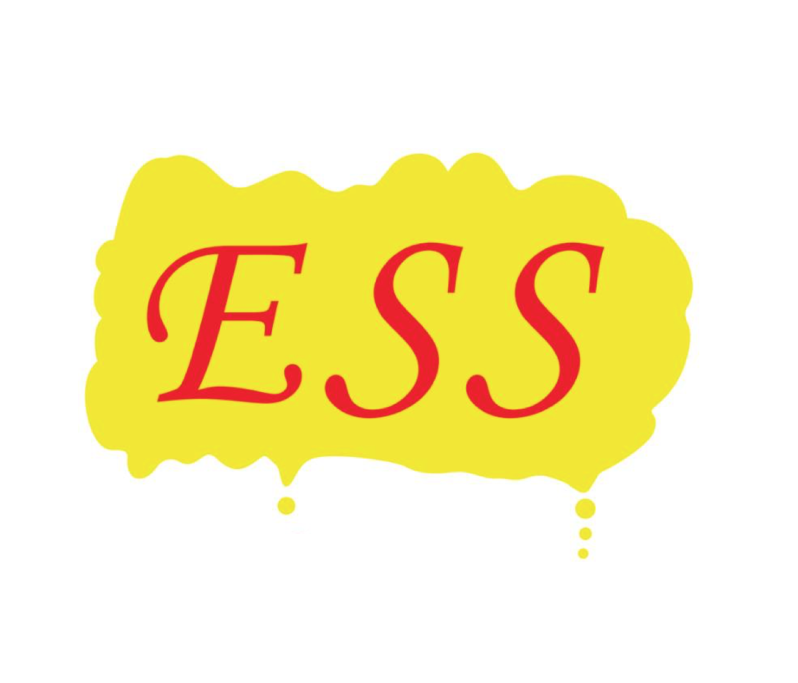

ESS
活動を見る

概要を知る
南山大学ESSはスピーチ・ディベート・ディスカッション・ドラマ・ガイドの５つのセクションに分かれて活動しています。
自分に合ったセクションを見つけて英語を楽しんでいきましょう！
自分に合ったセクションを見つけて英語を楽しんでいきましょう！
全て表示
SNSで繋がる
メンバーからのひとこと
中島正人
人文学部人類学科
いぃぃいいえすえすぅう！
ある日、1枚のびらを受け取りESSの食事会に行った。そして入部し1年生の時から学祭のリーダーなど経験し最終的にはプレジデントまで上り詰めた。 今ではその経験を生かし起業をしている。人生がESSで変わった。
池田紗玖良
南山国際教養学部
アットホームな雰囲気です
ガイドセクションに所属し、日々楽しく活動しています。 先輩方や同期と準備を重ね、外国人の方を英語でガイドできた時はとてもやりがいを感じました。 学年を問わず、仲が深められる素敵なサークルです！
こんな人におすすめ
- ＃英語/異文化に興味がある人
- ＃自分を表現したい人
SNSで繋がる
英語が大好きになりました
僕は英語が嫌いで、英語とはかけ離れた人生でした。 しかしESSで英語を使ううちに英語が話せるようになり、英語が大好きになりました。 さらに今では多くの留学生と友達になることが出来ました。